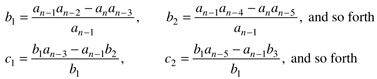

| [ Team LiB ] |
|
5.5 Routh Stability CriterionThe stability of the system is determined from the values of the roots (poles) of its characteristic equation. Finding roots is easy for first- and second-order equations (and not too hard for third) since there is an analytical solution for the roots of polynomials through third order. If the polynomial is fourth order or higher, the roots must be determined numerically. There is a method for determining whether any of the roots are positive (unstable) without actually calculating the roots (Routh, 1905). This method involves an analysis of the coefficients of the characteristic polynomial by setting up the Routh array. The test of the coefficients in the Routh array is called the Routh stability criterion. The Routh (pronounced like truth) stability criterion is based on a polynomial equation that has the following form The necessary condition for all the roots to be negative is that all ai > 0 (you can multiply all coefficients by –1 if needed). The sufficiency test requires the Routh array where the elements of rows 3 and higher have the form  If all the coefficients in the first column of the Routh array are positive, then the sufficient condition for stability is satisfied. If all the coefficients are not positive, then we can determine the number of unstable (positive) roots by the number of changes in the sign of the coefficients as we move down the first column. An example of the use of the Routh array to determine limits of a tuning parameter for closed-loop stability is shown next. Example 5.3: Third-Order Process with a P-Only ControllerFind the upper bound on proportional gain (for P-only control) for closed-loop stability of the following process The closed-loop transfer function is We must use the Routh stability criterion on the characteristic polynomial. The coefficients are The Routh array is Inserting our values into the Routh array, we see from the necessary condition that 1 + kc > 0, or kc > 0. The sufficient condition that must be checked is b1 > 0 which leads to kc < 10 for stability. The range of tuning parameters for stability is then As a practical matter, however, the controller gain should be the same sign as the process gain (recall that in Example 5.1 a controller gain with the wrong sign led to a process output response in the opposite direction of the setpoint change). Simulation results for a unit step setpoint change are shown in Figure 5-15. As kc is increased, the closed-loop response becomes more oscillatory. The closed-loop system will lose stability at kc = 10. Figure 5-15. Response of the third-order process to a unit setpoint change at t = 0. Effect of proportional gain. The system loses stability at kc = 10.Indeed, in Table 5-1 we show the relationship between kc and the closed-loop poles. Notice that one pole stays real and becomes more negative (faster) as kc increases. The other two poles become complex and the magnitude of the imaginary portion becomes larger as kc increases, indicating that the magnitude of oscillation is increasing. At kc = 10, the complex poles cross from the left-half plane to the RHP, indicating that the closed-loop system is unstable for kc > 10. Figure 5-16 is a plot of the roots of the characteristic equation, as a function of kc. It shows vividly the results presented in Table 5-1. The closed-loop poles start as three real, distinct poles at kc = 0. Two become complex, and move toward the RHP as kc is increased. When kc > 10, the two complex poles move into the RHP; at kc = 10, a continuous oscillation is formed. Figure 5-16. Roots of the characteristic equation, as a function of kc. x marks the three poles of the open-loop system (kc = 0). This type of plot is often called a root-locus plot. |
| [ Team LiB ] |
|